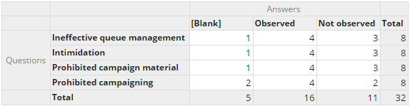
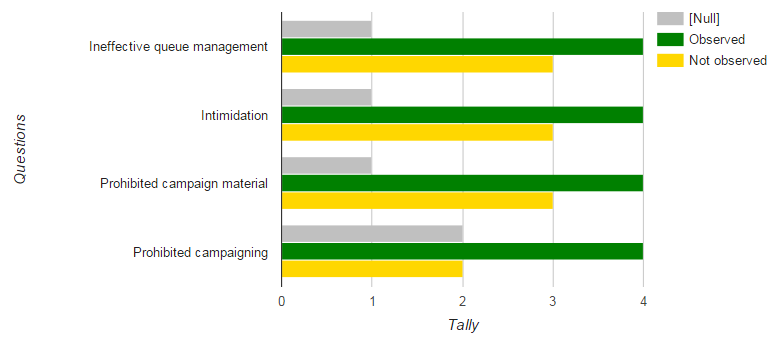
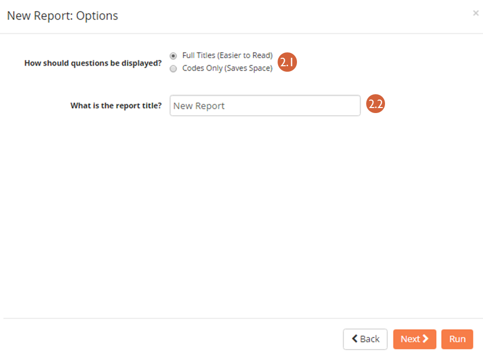
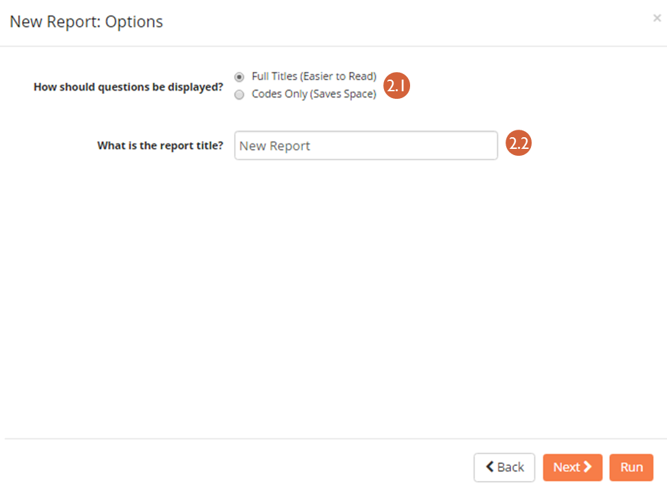
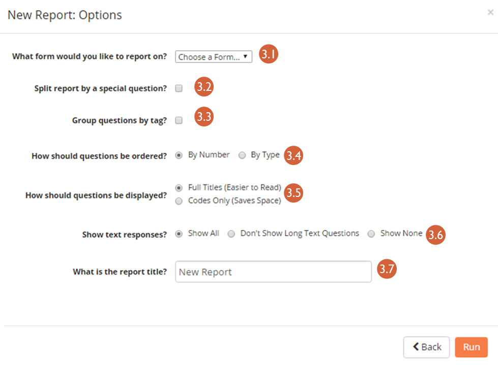
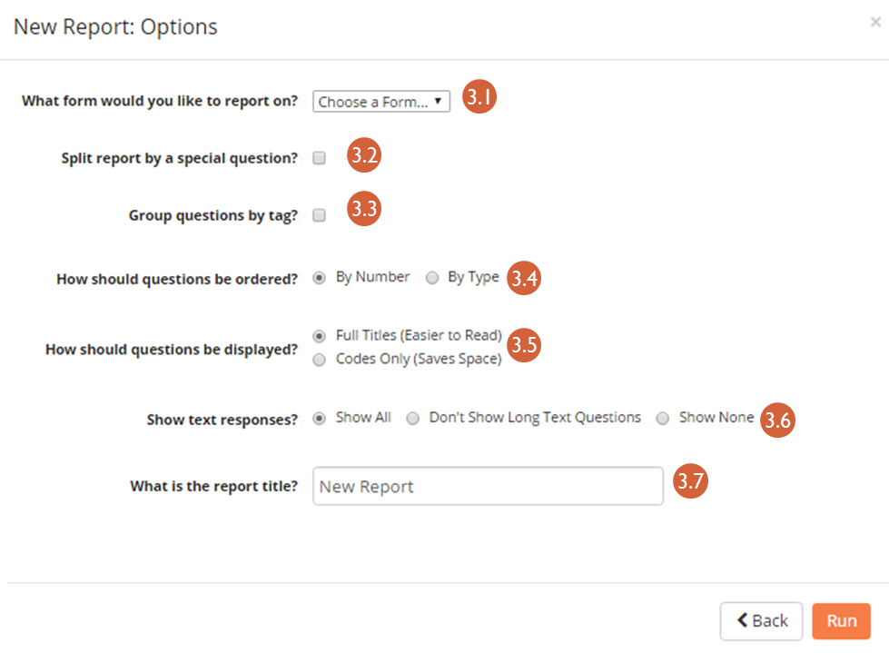

11. Reports and Data Analysis¶
ELMO stores and aggregates incoming data so that field and headquarters staff can quickly chart, graph, and analyze information while writing reports. These reports allow for preliminary conclusions to be made in a timely manner. However, other tools may be more useful for more detailed analysis. For this, data can be exported from ELMO for further review in other analytical software.
11.1. Internal report building¶
Submitted data can be visualized in the Reports section of ELMO. Click the Reports menu on the main menu bar to access this section. Coordinators can generate reports for response submissions from all users while observers are only able to generate reports from their own responses. To create a report, click the Create a New Report link at the top of the page.
Three types of report options will be offered:
- Tally Report: Shows totaled tallies of answers or responses,
grouped by attributes of interest. Examples:
- Table
- 
- Bar Chart
- 
If selected, the following prompts/options are available:

List Report: A raw listing of answers and attributes for a set of responses. For example:
 If selected, the following prompts/options are available:
If selected, the following prompts/options are available:- How the titles should be displayed – Full Titles (Full text of questions) or Codes Only (Displays unique code given to question in the Question creation mode)
- A title for the report
- The form responses to include in the report
- Columns to include
- Standard Report: A question-by-question summary of the
responses for a specific form. The purpose of this report is to help give a ready-made overview of responses for a specific questionnaire. For example:
 If selected, the following prompts/options are available:
If selected, the following prompts/options are available:- Form to report on
- Whether to split the report by responses to a special question
- Whether to group questions by tag
- Whether to order questions By Number (the order they appeared in the form) or By Type
- How the titles should be displayed – Full Titles (Full text of questions) or Codes Only (Displays unique code given to question in the Question creation mode)
- Whether to show all text responses, not show long text responses, or not show any text responses
- A title for the report
11.2. Exporting to Spreadsheets (.csv)¶
mission needs for analyzing collected data, the data can be exported to a .csv file, a format readable in many quantitative and qualitative analysis platforms (e.g Excel, R, Tableau, MaxQDA). | To export data to a CSV file:
- Click the Responses menu
- Click Export to CSV Format
Tally and List Reports can also be exported to a CSV file:
- Click the Reports menu
- Click the report to be exported
- Click Export Data To CSV Format
11.3. External connections - Tableau¶
Tableau is a data visualization software that allows to present ELMO data in a visually engaging and interactive fashion. If you love to use Tableau and have a license, this is how to get started with ELMO.
Things that you will need are: SERVER credentials, and MySQL DATABASE credentials. These are different from ELMO accounts or logins. These are things that your ELMO administrator should have on hand.
Establishing a Secure Tunnel
In order to connect to Tableau, you will need to establish a “secure shell tunnel” or encrypted connection between your computer and the server that hosts ELMO. There are a number of ways that you can do this such as clients such as PuTTY (for Windows) or direct through a terminal. Check with your ELMO administrator for recommendations.
The registered port for MySQL connections is 3306.
An example of establishing the tunnel via terminal might look like this:
ssh –N –p 22 @ -L 9990//3306
which sometimes hangs even if success is achieved.
You may also have to make sure you have the appropriate ODBC drivers:
https://www.tableau.com/en-us/support/drivers
(so, n.b., if all this doesn’t make sense to you, find your local friendly ELMO administrator who should be able to make sense of this!)
Connecting Tableau to the Database
- Open Tableau.
- Click Data > Connect to Data …(or on the left Connect sidebar, look under To a Server)
- Select MySQL.
- For server name, enter IP address
- For port, enter the port you established through your tunnel session (in the example above it is 9990)
- Enter the Database username and password. (this is not the same as the server credentials)
From there you should select the particular database instance that houses your data.
Making sense of the data in Tableau
From this point onwards, there are a number of ways that you can examine the data – if you need help to understand the tables and relationships, check out the Entity Relationship Diagram on our GitHub at https://github.com/thecartercenter/elmo/blob/master/docs/erd.pdf (also available at the bottom half of the introductory GitHub page).
But, one way to easily get started is to take advantage of the custom SQL query we provide in ELMO. For each mission, in the settings pane, you can see a nifty ready query:

In Tableau, select the database and then
- Select Custom SQL
- Copy the Tableau SQL code from ELMO as it appears above.
- Switch back to Tableau and paste the Tableau SQL code into the Custom SQL
- In the final box, give the connection a name such as ‘Presidential Runoff 2014’. You will be able to reuse this connection with other worksheets.
Click OK. The Measures and Dimensions should appear in the left panes.